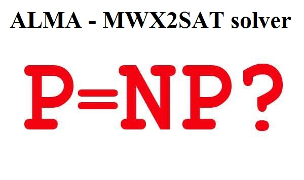

Instance: An $n$-variable $2CNF$ formula with monotone clauses (meaning the variables are never negated) using logic operators $\oplus$ (instead of using the operator $\vee$) and a positive integer $k$.
Question: Is there exists a satisfying truth assignment in which at least $k$ of the variables are true?
Note: This problem is NP-complete (If any NP-complete can be solved in polynomial time, then $P = NP$).
This work is based on the following published article: Note for the P versus NP Problem.
A literal in a Boolean formula is an occurrence of a variable or its negation. A Boolean formula is in conjunctive normal form, or CNF, if it is expressed as an AND of clauses, each of which is the OR of one or more literals. A Boolean formula is in 2-conjunctive normal form or 2CNF, if each clause has exactly two distinct literals.
A truth assignment for a Boolean formula $\phi$ is a set of values for the variables in $\phi$. The problem Monotone Weighted Xor 2-satisfiability problem (MWX2SAT) asks whether a given Boolean formula $\phi$ in 2CNF has a satisfying truth assignment with at least $k$ true variables using logic operators $\oplus$ on monotone clauses.
Instance: The Boolean formula $(x_{1} \oplus x_{2}) \wedge (x_{2} \oplus x_{3})$ where $\oplus$ (XOR) and $\wedge$ (AND) are the logic operations.
Answer: Yes (we can assign the variables $x_{2}$ as true from a truth assignment to the formula).
The input is on DIMACS formula with the extension .cnf.
Let's take as the accept.cnf from our previous example: The Boolean formula $(x_{1} \oplus x_{2}) \wedge (x_{2} \oplus x_{3})$ is
p cnf 3 2
1 2 0
2 3 0
The first line p cnf 3 2 means there are 3 variables and 2 clauses.
The second line 1 2 0 means the clause $(x_{1} \oplus x_{2})$ (Note that, the number 0 means the end of the clause).
The third line 2 3 0 means the clause $(x_{2} \oplus x_{3})$ (Note that, the number 0 means the end of the clause).
Install Python 3.10, 3.11, or 3.12.
Download and Install the NetworkX's Library version 3.3 and its dependencies
pip install networkx[default]
To build and run from the command prompt:
git clone https://github.com/frankvegadelgado/alma.git
cd alma
On alma directory run
python solver.py -i accept.cnf
Then, we should enter the value of the positive integer $k$:
Enter the positive integer k:1
You entered 1
Finally, it would obtain in the console output:
YES
[1, 3]
k = 2
which means there exist at least $k = 2$ true variables for a satisfying truth assignment where the true variables would be $x_{1}$ and $x_{3}$ (i.e. $[1, 3]$).
If we take a non-acceptance instance
python solver.py -i reject.cnf
then it would obtain in the console output:
NO
no matter how large or small we pick up the value of $k$ in this case.
On alma directory if you run
python solver.py -h
then you will obtain the following output
usage: solver.py [-h] -i INPUTFILE [-v] [-t]
Solve an NP-complete problem from a DIMACS file.
options:
-h, --help show this help message and exit
-i INPUTFILE, --inputFile INPUTFILE
Input file path
-v, --verbose Enable verbose output
-t, --timer Enable timer output
where it is described all the possible options.
+ We solve this problem in polynomial time.
+ Consequently, we deduce that P = NP.